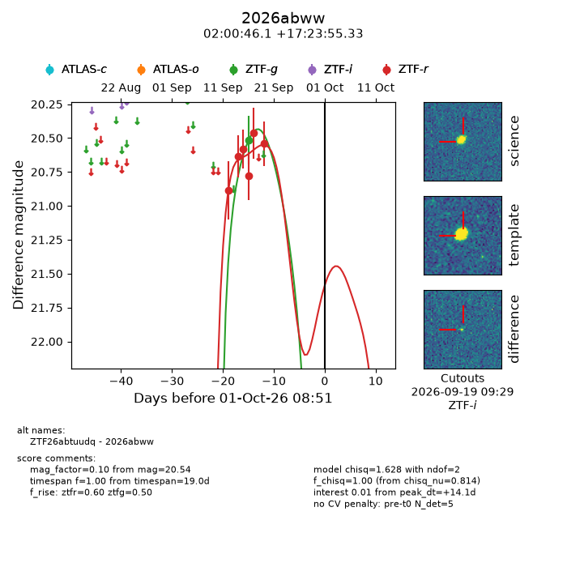
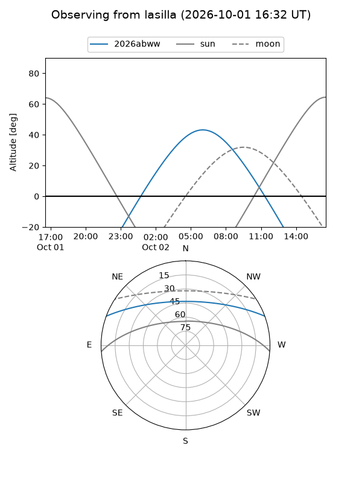
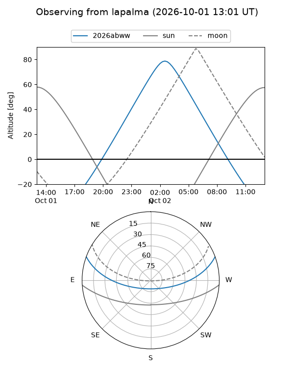
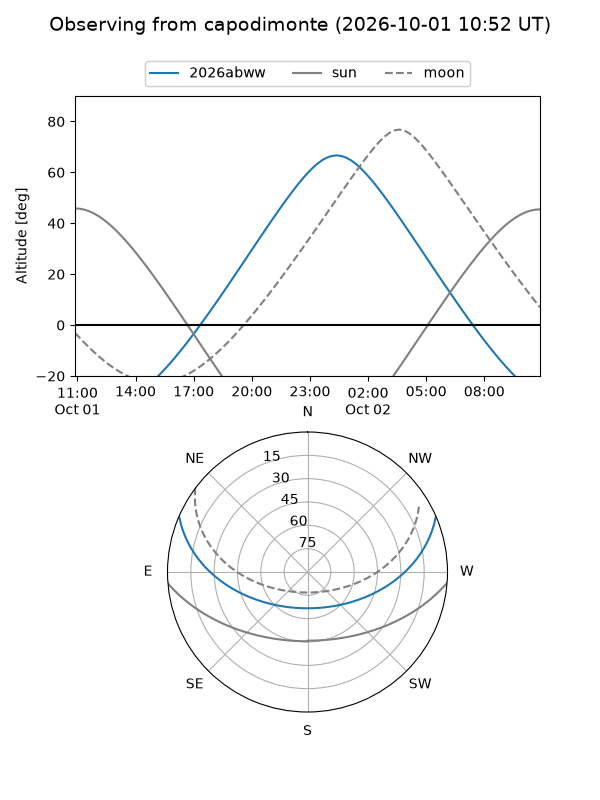
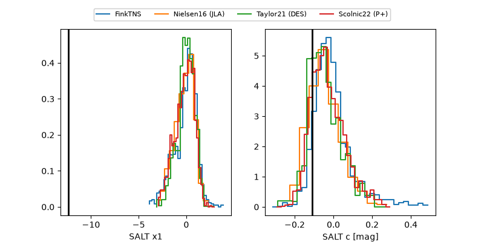

2026abww
Target 2026abww at 2026-10-01 20:18
Aliases and brokers:
FINK-ZTF: ztf.fink-portal.org/ZTF26abtuudq
Lasair-ZTF: lasair-ztf.lsst.ac.uk/objects/ZTF26abtuudq
ALeRCE-ZTF: alerce.online/object/ZTF26abtuudq
YSE-PZ: ziggy.ucolick.org/yse/transient_detail/2026abww
TNS name: wis-tns.org/object/2026abww
Direct TNS query: direct search
alt names
ZTF26abtuudq (ztf,fink_ztf)
2026abww (tns,yse)
Coordinates:
equatorial (ra, dec) = 30.1923,+17.39870
equatorial (HMS+DMS) = 02:00:46.15,+17:23:55.33
galactic (l, b) = (145.5760,-42.40413)
Flags:
TNS type: nan
peak dt: +14.6
Photometry:
last ztfg=20.52, ztfr=20.54
1 ztfg, 6 ztfr detections
Lightcurve

Visibility



Additional plots
